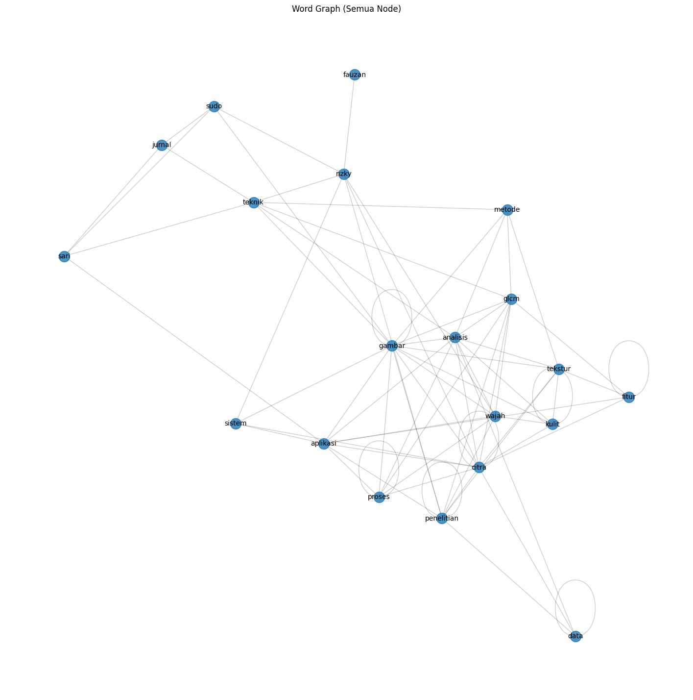

PAPER WORD GRAPH#
# Install library (Colab)
!pip install PyMuPDF networkx nltk matplotlib pandas
Requirement already satisfied: PyMuPDF in /usr/local/python/3.12.1/lib/python3.12/site-packages (1.26.7)
Requirement already satisfied: networkx in /home/codespace/.local/lib/python3.12/site-packages (3.5)
Requirement already satisfied: nltk in /usr/local/python/3.12.1/lib/python3.12/site-packages (3.9.2)
Requirement already satisfied: matplotlib in /home/codespace/.local/lib/python3.12/site-packages (3.10.7)
Requirement already satisfied: pandas in /home/codespace/.local/lib/python3.12/site-packages (2.3.3)
Requirement already satisfied: click in /usr/local/python/3.12.1/lib/python3.12/site-packages (from nltk) (8.3.1)
Requirement already satisfied: joblib in /home/codespace/.local/lib/python3.12/site-packages (from nltk) (1.5.2)
Requirement already satisfied: regex>=2021.8.3 in /usr/local/python/3.12.1/lib/python3.12/site-packages (from nltk) (2025.11.3)
Requirement already satisfied: tqdm in /usr/local/python/3.12.1/lib/python3.12/site-packages (from nltk) (4.67.1)
Requirement already satisfied: contourpy>=1.0.1 in /home/codespace/.local/lib/python3.12/site-packages (from matplotlib) (1.3.3)
Requirement already satisfied: cycler>=0.10 in /home/codespace/.local/lib/python3.12/site-packages (from matplotlib) (0.12.1)
Requirement already satisfied: fonttools>=4.22.0 in /home/codespace/.local/lib/python3.12/site-packages (from matplotlib) (4.60.1)
Requirement already satisfied: kiwisolver>=1.3.1 in /home/codespace/.local/lib/python3.12/site-packages (from matplotlib) (1.4.9)
Requirement already satisfied: numpy>=1.23 in /home/codespace/.local/lib/python3.12/site-packages (from matplotlib) (2.3.4)
Requirement already satisfied: packaging>=20.0 in /home/codespace/.local/lib/python3.12/site-packages (from matplotlib) (25.0)
Requirement already satisfied: pillow>=8 in /home/codespace/.local/lib/python3.12/site-packages (from matplotlib) (12.0.0)
Requirement already satisfied: pyparsing>=3 in /home/codespace/.local/lib/python3.12/site-packages (from matplotlib) (3.2.5)
Requirement already satisfied: python-dateutil>=2.7 in /home/codespace/.local/lib/python3.12/site-packages (from matplotlib) (2.9.0.post0)
Requirement already satisfied: pytz>=2020.1 in /home/codespace/.local/lib/python3.12/site-packages (from pandas) (2025.2)
Requirement already satisfied: tzdata>=2022.7 in /home/codespace/.local/lib/python3.12/site-packages (from pandas) (2025.2)
Requirement already satisfied: six>=1.5 in /home/codespace/.local/lib/python3.12/site-packages (from python-dateutil>=2.7->matplotlib) (1.17.0)
# Import library
import fitz # PyMuPDF
import re
import nltk
import networkx as nx
import matplotlib.pyplot as plt
import pandas as pd
from collections import Counter
from itertools import combinations
from nltk.corpus import stopwords
nltk.download('stopwords')
[nltk_data] Downloading package stopwords to
[nltk_data] /home/codespace/nltk_data...
[nltk_data] Package stopwords is already up-to-date!
True
LOAD & EKSTRAK TEKS DARI PDF
def extract_text_from_pdf(pdf_path):
doc = fitz.open(pdf_path)
text = ""
for page in doc:
text += page.get_text()
return text
# Jalankan fungsi
pdf_path = "/content/pepertugas.pdf"
raw_text = extract_text_from_pdf(pdf_path)
print("Jumlah karakter:", len(raw_text))
print("\nContoh teks:\n")
print(raw_text[:1000])
---------------------------------------------------------------------------
FileNotFoundError Traceback (most recent call last)
/tmp/ipykernel_22385/4050799808.py in ?()
1 # Jalankan fungsi
2 pdf_path = "/content/pepertugas.pdf"
----> 3 raw_text = extract_text_from_pdf(pdf_path)
4
5 print("Jumlah karakter:", len(raw_text))
6 print("\nContoh teks:\n")
/tmp/ipykernel_22385/1589951990.py in ?(pdf_path)
1 def extract_text_from_pdf(pdf_path):
----> 2 doc = fitz.open(pdf_path)
3 text = ""
4 for page in doc:
5 text += page.get_text()
/usr/local/python/3.12.1/lib/python3.12/site-packages/pymupdf/__init__.py in ?(self, filename, stream, filetype, rect, width, height, fontsize)
3061 self.page_count2 = extra.page_count_pdf
3062 else:
3063 self.page_count2 = extra.page_count_fz
3064 finally:
-> 3065 JM_mupdf_show_errors = JM_mupdf_show_errors_old
FileNotFoundError: no such file: '/content/pepertugas.pdf'
PREPROCESSING TEKS
def preprocess_text(text):
text = text.lower()
text = re.sub(r'[^a-z\s]', ' ', text)
tokens = text.split()
stop_words = set(stopwords.words('indonesian'))
tokens = [t for t in tokens if t not in stop_words and len(t) > 3]
return tokens
# Jalankan fungsi
tokens = preprocess_text(raw_text)
print("Jumlah token bersih:", len(tokens))
print("Contoh token:", tokens[:30])
Jumlah token bersih: 2771
Contoh token: ['https', 'sudo', 'attribution', 'sharealike', 'international', 'some', 'rights', 'reserved', 'pengolahan', 'citra', 'digital', 'implementasi', 'metode', 'gray', 'level', 'occurrence', 'matrix', 'menganalisis', 'tekstur', 'kulit', 'wajah', 'rizky', 'fauzan', 'naibaho', 'indah', 'purnama', 'sari', 'fakultas', 'ilmu', 'komputer']
MEMBANGUN WORD CO-OCCURRENCE GRAPH
def build_word_graph_with_matrix(tokens, window_size=2, top_n=20):
# Ambil kata paling sering
vocab = Counter(tokens).most_common(top_n)
words = [w for w, _ in vocab]
# Inisialisasi matrix
matrix = pd.DataFrame(0, index=words, columns=words)
# Inisialisasi graph
G = nx.Graph()
# Bangun matrix & graph BERSAMA
for i in range(len(tokens) - window_size):
window = tokens[i:i + window_size]
for w1, w2 in combinations(window, 2):
if w1 in words and w2 in words:
# Update matrix
matrix.loc[w1, w2] += 1
matrix.loc[w2, w1] += 1
# Update graph (LOGIKA TIDAK DIUBAH)
if G.has_edge(w1, w2):
G[w1][w2]['weight'] += 1
else:
G.add_edge(w1, w2, weight=1)
return matrix, G
co_matrix, word_graph = build_word_graph_with_matrix(tokens)
print("Jumlah Node :", word_graph.number_of_nodes())
print("Jumlah Edge :", word_graph.number_of_edges())
co_matrix
Jumlah Node : 20
Jumlah Edge : 72
| citra | kulit | tekstur | wajah | sari | glcm | gambar | metode | aplikasi | sistem | penelitian | fitur | jurnal | teknik | analisis | sudo | data | proses | rizky | fauzan | |
|---|---|---|---|---|---|---|---|---|---|---|---|---|---|---|---|---|---|---|---|---|
| citra | 16 | 1 | 1 | 0 | 0 | 2 | 1 | 0 | 2 | 1 | 1 | 3 | 0 | 0 | 1 | 0 | 2 | 2 | 1 | 0 |
| kulit | 1 | 2 | 26 | 39 | 0 | 0 | 1 | 0 | 0 | 0 | 0 | 0 | 0 | 0 | 1 | 0 | 0 | 0 | 0 | 0 |
| tekstur | 1 | 26 | 0 | 0 | 0 | 0 | 4 | 1 | 0 | 0 | 1 | 7 | 0 | 0 | 5 | 0 | 0 | 0 | 0 | 0 |
| wajah | 0 | 39 | 0 | 0 | 0 | 1 | 1 | 0 | 1 | 0 | 2 | 0 | 0 | 0 | 1 | 0 | 0 | 2 | 1 | 0 |
| sari | 0 | 0 | 0 | 0 | 0 | 0 | 0 | 0 | 1 | 0 | 0 | 0 | 1 | 1 | 0 | 1 | 0 | 0 | 0 | 0 |
| glcm | 2 | 0 | 0 | 1 | 0 | 0 | 3 | 10 | 0 | 0 | 1 | 4 | 0 | 1 | 3 | 0 | 0 | 1 | 0 | 0 |
| gambar | 1 | 1 | 4 | 1 | 0 | 3 | 6 | 1 | 2 | 2 | 1 | 0 | 0 | 1 | 2 | 1 | 0 | 2 | 0 | 0 |
| metode | 0 | 0 | 1 | 0 | 0 | 10 | 1 | 0 | 0 | 0 | 0 | 0 | 0 | 1 | 4 | 0 | 0 | 0 | 0 | 0 |
| aplikasi | 2 | 0 | 0 | 1 | 1 | 0 | 2 | 0 | 0 | 4 | 2 | 1 | 0 | 0 | 1 | 0 | 0 | 2 | 0 | 0 |
| sistem | 1 | 0 | 0 | 0 | 0 | 0 | 2 | 0 | 4 | 0 | 0 | 0 | 0 | 0 | 0 | 0 | 0 | 0 | 1 | 0 |
| penelitian | 1 | 0 | 1 | 2 | 0 | 1 | 1 | 0 | 2 | 0 | 6 | 0 | 0 | 0 | 0 | 0 | 1 | 0 | 1 | 0 |
| fitur | 3 | 0 | 7 | 0 | 0 | 4 | 0 | 0 | 1 | 0 | 0 | 10 | 0 | 0 | 0 | 0 | 0 | 0 | 0 | 0 |
| jurnal | 0 | 0 | 0 | 0 | 1 | 0 | 0 | 0 | 0 | 0 | 0 | 0 | 0 | 15 | 0 | 11 | 0 | 0 | 0 | 0 |
| teknik | 0 | 0 | 0 | 0 | 1 | 1 | 1 | 1 | 0 | 0 | 0 | 0 | 15 | 0 | 2 | 0 | 0 | 0 | 1 | 0 |
| analisis | 1 | 1 | 5 | 1 | 0 | 3 | 2 | 4 | 1 | 0 | 0 | 0 | 0 | 2 | 0 | 0 | 1 | 2 | 0 | 0 |
| sudo | 0 | 0 | 0 | 0 | 1 | 0 | 1 | 0 | 0 | 0 | 0 | 0 | 11 | 0 | 0 | 0 | 0 | 0 | 5 | 0 |
| data | 2 | 0 | 0 | 0 | 0 | 0 | 0 | 0 | 0 | 0 | 1 | 0 | 0 | 0 | 1 | 0 | 4 | 0 | 0 | 0 |
| proses | 2 | 0 | 0 | 2 | 0 | 1 | 2 | 0 | 2 | 0 | 0 | 0 | 0 | 0 | 2 | 0 | 0 | 2 | 0 | 0 |
| rizky | 1 | 0 | 0 | 1 | 0 | 0 | 0 | 0 | 0 | 1 | 1 | 0 | 0 | 1 | 0 | 5 | 0 | 0 | 0 | 21 |
| fauzan | 0 | 0 | 0 | 0 | 0 | 0 | 0 | 0 | 0 | 0 | 0 | 0 | 0 | 0 | 0 | 0 | 0 | 0 | 21 | 0 |
VISUALISASI WORD GRAPH
def visualize_word_graph(G, top_n=30):
degrees = dict(G.degree())
top_nodes = sorted(degrees, key=degrees.get, reverse=True)[:top_n]
subgraph = G.subgraph(top_nodes)
plt.figure(figsize=(14, 14))
pos = nx.spring_layout(subgraph, k=0.4)
nx.draw_networkx_nodes(subgraph, pos, node_size=800)
nx.draw_networkx_edges(subgraph, pos, alpha=0.5)
nx.draw_networkx_labels(subgraph, pos, font_size=10)
plt.title("Word Graph dari Paper (Top Kata)")
plt.axis('off')
plt.show()
# Tampilkan graph
visualize_word_graph(word_graph)

HITUNG PAGE RANK CENTRALITY
def compute_pagerank(G):
pr = nx.pagerank(G, weight='weight')
df = pd.DataFrame(pr.items(), columns=['Kata', 'PageRank'])
df = df.sort_values(by='PageRank', ascending=False)
return df
# Jalankan PageRank
pagerank_df = compute_pagerank(word_graph)
pagerank_df.head(15)
| Kata | PageRank | |
|---|---|---|
| 9 | citra | 0.019128 |
| 19 | kulit | 0.015521 |
| 26 | sari | 0.012515 |
| 18 | tekstur | 0.011718 |
| 20 | wajah | 0.011162 |
| 46 | glcm | 0.010474 |
| 48 | gambar | 0.009878 |
| 12 | metode | 0.009532 |
| 88 | aplikasi | 0.008931 |
| 184 | sistem | 0.008846 |
| 66 | penelitian | 0.006894 |
| 144 | data | 0.006391 |
| 150 | jurnal | 0.006307 |
| 69 | teknik | 0.005951 |
| 31 | informasi | 0.005923 |
top_keywords = pagerank_df.head(10)
top_keywords
| Kata | PageRank | |
|---|---|---|
| 9 | citra | 0.019128 |
| 19 | kulit | 0.015521 |
| 26 | sari | 0.012515 |
| 18 | tekstur | 0.011718 |
| 20 | wajah | 0.011162 |
| 46 | glcm | 0.010474 |
| 48 | gambar | 0.009878 |
| 12 | metode | 0.009532 |
| 88 | aplikasi | 0.008931 |
| 184 | sistem | 0.008846 |